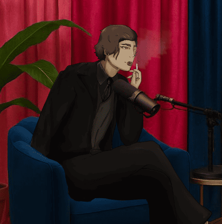
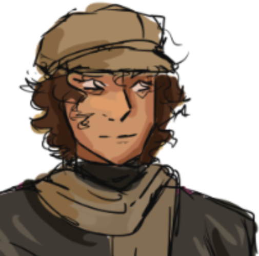
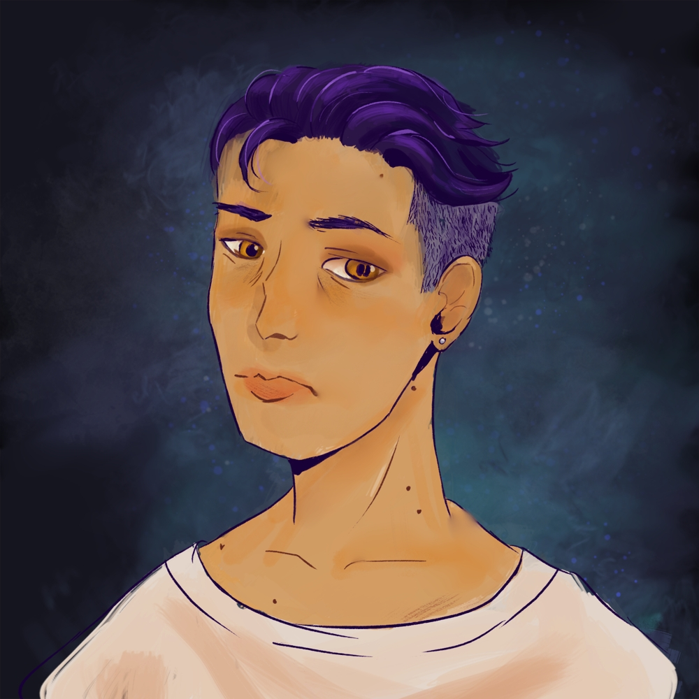

Ines
Ines
Un clan ne survit pas seulement par ce qu'il possède, mais par l'histoire que les autres racontent à son sujet. Et une histoire, cela se construit.
Information connue
La plus jeune des roses
Ines est l'une des dernieres membres du clan Toreador. La plus jeune d'entre eux, elle à été choisie et étreint pour un but précis : aider le clan à passer dans un nouvel age.Une trame commune
Chacun avait sa propre stratégie, mais il n'y avait pas de cohérence, et bien souvent le clan se marchait sur les pieds. En tant que ghoule, Ines à aidé à lisser la stratégie du clan et à associer leur actions. Ce travail lui à valu d'obtenir sa place, et elle continue à gérer l'image du clan dans l'ombre. Si cela ne lui donne pas beaucoup de réputation et de statut pour l'instant, elle semble s'en contenter, son temps viendra, et lorsque ce sera le cas, elle sera la star d'un clan qu'elle aura ammené à son paroxisme.Son masque
Il est connu qu'elle a dut abandonner son dernier masque recemment, et tant qu'elle ne s'en refait pas un, elle est un peu isolé de l'oeil public.Relations
LIGNEE

Max'- Sa sire est très protectrice envers elle, et elle à encore le reflexe de se retourner vers elle en Elysium pour avoir la bonne marche à suivre.
RELATION

Camil- Elle s'entends bien avec Camil depuis qu'elle aient organisé ensemble un evenement mettant en avant les chats à Izmir et leur portée touristique.

Alejandro- Elle travaille encore pour S.R.A et l'aide au branding.
trivia
- Elle ne semble pas avoir trouvé son grand coup d'éclat, celui qui lui ferra quitter la coterie.
- Elle semble etre une protégée de Nebetta, qui l'apprécie beaucoup.
- Elle est la seule neonate de sa coterie a n'avoir jamais demandé l'aide de la ville pour couvrir une brisure de mascarade.